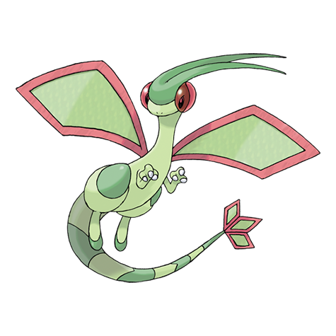
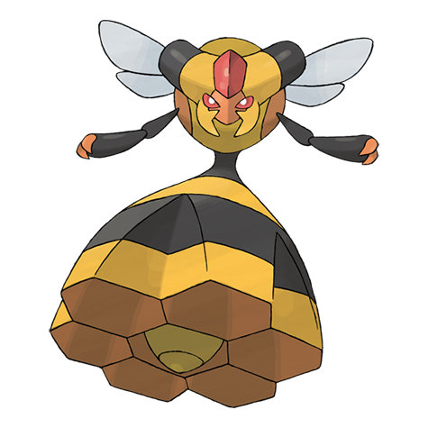

The first Pokemon I would always have on my team would be Scizor. I love it's sleek design, combining it's two typings well. I particularly like it's moveset and uses in battle.

Flygon is one of my favourite designed Pokemon of all time. There's just something about it's smooth design, mixed with cool features like the goggles on it's eyes, showing it's adapted to living it sandstorms.

The first Pokemon I ever got, back in the first game I ever played, Pokemon Sapphire. I immediately fell in love with it's simplistic design and dumb yet adorable face. It's evolution Swampert is also very fun to use.

This Pokemon isn't too remarkable, but I find it's design rather quirky. It's little hat part upon the top of it's head amuses me, but doesn't look bad at all. I enjoy it's look matching it's Dark/Flying type.
Bug type Pokemon are easily my favourite type of Pokemon, and one of the best in my opinion, is Vespiquen. It's style is based on that of a queen bee, with the bottom part being based off the hive itself, which is really cool.

It's Wooper, what else do I need to say?